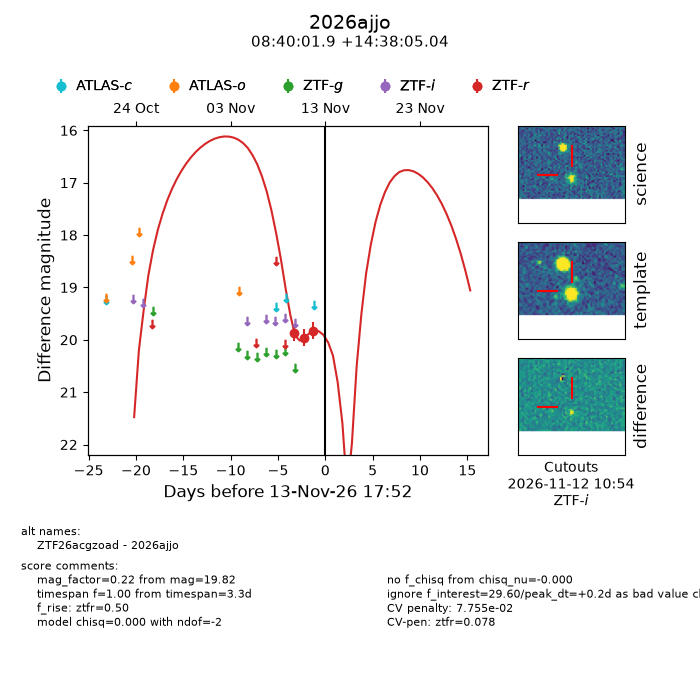
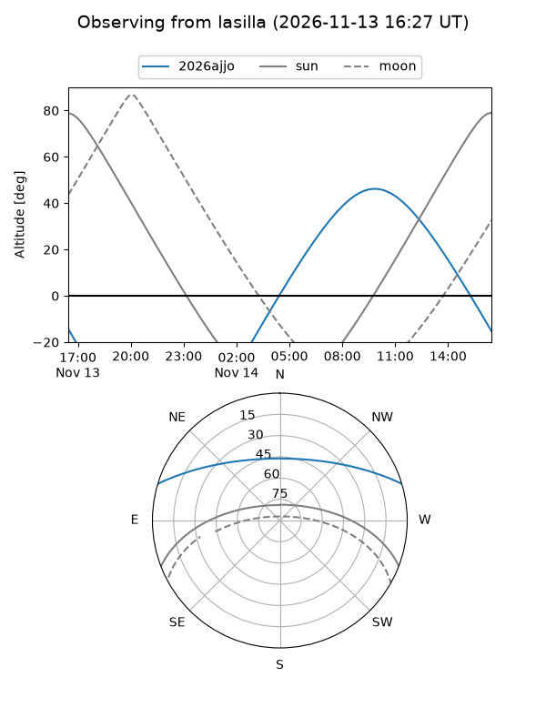
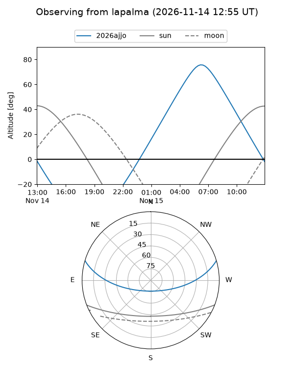
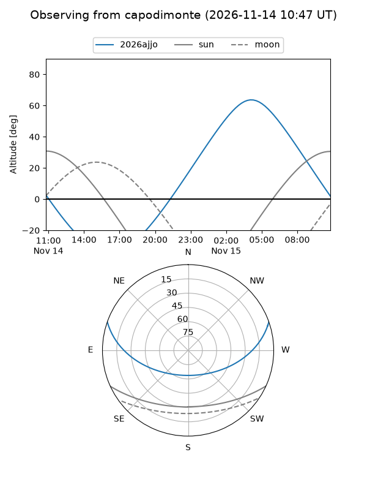

2026ajjo
Target 2026ajjo at 2026-11-13 17:58
Aliases and brokers:
FINK-ZTF: ztf.fink-portal.org/ZTF26acgzoad
Lasair-ZTF: lasair-ztf.lsst.ac.uk/objects/ZTF26acgzoad
ALeRCE-ZTF: alerce.online/object/ZTF26acgzoad
YSE-PZ: ziggy.ucolick.org/yse/transient_detail/2026ajjo
TNS name: wis-tns.org/object/2026ajjo
Direct TNS query: direct search
alt names
ZTF26acgzoad (ztf,fink_ztf)
2026ajjo (tns,yse)
Coordinates:
equatorial (ra, dec) = 130.0080,+14.63473
equatorial (HMS+DMS) = 08:40:01.93,+14:38:05.04
galactic (l, b) = (211.3653,+30.53952)
Flags:
likely cv: !!
CV pen: 0.07754552453925227
peak dt: +0.2
Photometry:
last ztfr=19.82
3 ztfr detections
Lightcurve

Visibility



Additional plots